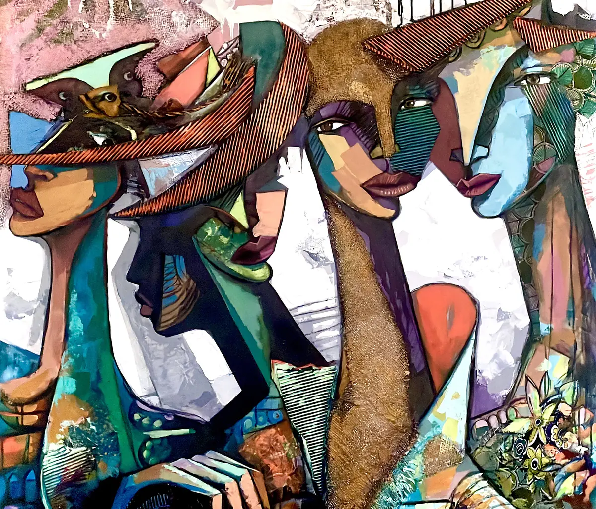

Fragments That Remain
- Año
- 2021
- Técnica
- Técnica mixta sobre lienzo
- Medidas (alto × ancho)
- 100 × 120 cm
Fragments That Remain, 2021: una obra en técnica mixta sobre lienzo del pintor y escultor cubano-noruego Ramón Eduardo Haití Filiu.
Consultar esta obra